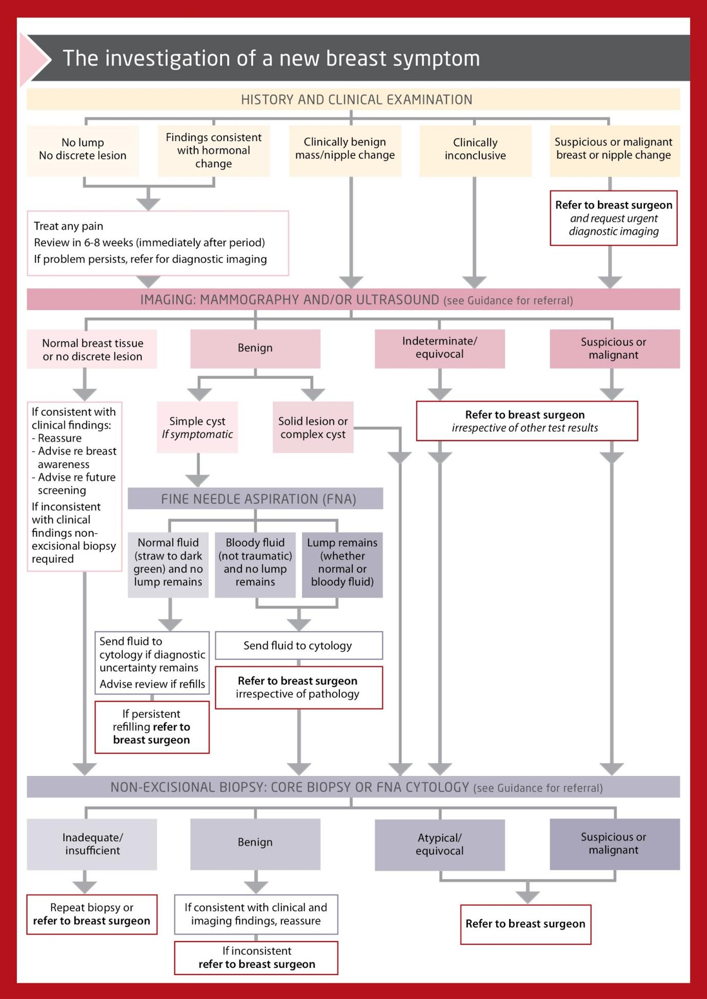

BREAST LUMPS
Your next patient is a 40 year old lady who has presented to your clinic concerned of a breast lump.
Task:
Take history from the patient
Physical examination will appear on the screen
Explain your diagnosis and differentials to the patient
(Explain your management plan)
2. Australian Guidelines Approach to Breast Lumps
Triple Test
The triple test refers to three diagnostic components:
- medical history and clinical breast examination
- Imaging depends on age:
- Younger: Ultrasound (dense tissue)
- Older: Mammogram (fatty tissue)
- Age 40–50: specialists often do both.
- Younger: Ultrasound (dense tissue)
- non-excisional biopsy -core biopsy and/or fine needle aspiration (FNA) cytology.
Correct Sequencing
- Must follow correct order: 1 → 2 → 3.
- Not acceptable to change sequence.
Controversial Question
- 25-year-old, no cancer risk factors.
- Exam: typical benign fibroadenoma.
- Ultrasound: typical fibroadenoma.
- Do you biopsy?
– Answer: Yes. - Because the triple test requires all three tests to be done for a proper diagnosis.
- Managing clinician must correlate cytological/histological results with clinical and imaging findings.
3. History Taking – Symptoms of Breast Cancer
While the most common presenting symptom of breast cancer is a new breast lump, other presenting symptoms include:
- thickening or ridge
- breast or nipple asymmetry
- skin changes such as dimpling, redness
- nipple changes
- nipple discharge
- unilateral breast pain.
→ Must ask these, not only “breast lump”.
Family History
- Breast cancer
- Ovarian cancer (genes are linked)
Hormonal Status
- Menstrual history
- Parity
- Pregnancies
- Breastfeeding
- Follow full 5Ps history.
Current Medications
- Hormonal treatments including OCP.
Lifestyle Factors
- Obesity
- Alcohol
- Physical activity
- Smoking (risk factor for most GYN cancers)
Previous History
- Radiation
- Breast surgery
Duration of Symptoms
- Often not useful as most patients present after noticing lump recently.
Relation to Menstrual Cycles
- Important question: linked to fibrocystic changes (not “cyclical mastalgia”).
- Near periods: pain worsens, size of cyst changes.
Associated Symptoms
- The key symptom questions already mentioned.
4. Examination
- Skipped (covered in physical examination workshop).
5. Flow Chart – Triple Test Process

Step 1: History + Examination
- If no lump / findings consistent with hormonal changes → fine.
If Lump is Felt: Three Branches
- Malignant-feeling lump
- Immediate referral + arrange imaging simultaneously.
- Move fast due to concerning exam findings.
- Immediate referral + arrange imaging simultaneously.
- Inconclusive lump
→ Go to Step 2. - Benign-feeling lump
→ Go to Step 2.
Step 2: Imaging
- Ultrasound or mammogram depending on age.
- If no lump → good.
- If malignant lump → flash → core biopsy or FNA cytology.
If imaging shows a benign lesion (solid lump)
- Flash → still need a core biopsy.
- Therefore, even a typical fibroadenoma still requires biopsy.
Cyst Cases
(AMC has not used a breast cyst yet; cysts are tricky.)
Two points to memorise:
- Complex cyst → biopsy.
- Complex = abnormal appearance, solid components, irregular wall thickness.
- Complex = abnormal appearance, solid components, irregular wall thickness.
- Simple cyst → aspirate.
Red Flags for Cysts
- Bloody fluid → panic.
- Lump remains after complete aspiration → panic.
- Send fluid for cytology (FNA).
- Most of the time, fluid is sent for cytology anyway (FNAC term used).
Biopsy Types
- Solid lesions → core biopsy.
- Thicker needle, takes piece of tissue.
- Thicker needle, takes piece of tissue.
- Cystic lesions → fine needle aspiration.
- Drains fluid.
- Drains fluid.
- Techniques similar but conceptually different.
Results
- If benign → fine unless concerning features present (may refer).
- If suspicious / malignant / atypical OR cytology/biopsy inconclusive → refer to breast surgeon.
Your next patient is a 40 year old lady who has presented to your clinic concerned of a breast lump.
Task:
- Take history from the patient
- Physical examination will appear on the screen
- Explain your diagnosis and differentials to the patient
- (Explain your management plan)
1. Opening / Start of History
- Start with open-ended question:
“How can I help you today?” or “Tell me more about the breast lump that you found today.” - Expect concern from patient.
- Reassurance statement:
“I understand your concern, Jane, but let me ask you a few questions. I’ll examine you, try to find the cause, and make the best management plan as always.”
2. Explore the Lump
Timing
- “When did you first notice it?”
- “Is this the first time you are having a breast lump?”
Number
- “How many are you feeling? Is it just one or a few?”
Size
(non-centimetre description)
- “Can you describe the size for me — pea size or golf ball etc.?”
Character — KEY QUESTIONS
- Pain: “Is the lump painful to touch?”
- Skin changes:
- Any redness, swelling, or other skin changes?
- Looking for Dimpling / peau d’orange
- Any redness, swelling, or other skin changes?
- Consistency: “Does it feel hard or rubbery/soft?”
- Mobility: “Does it move freely or not?”
3. Red Flags — MOST IMPORTANT QUESTIONS
- Nipple discharge
- If yes → Ask color (most important)
- If yes → Ask color (most important)
- Nipple changes
- Any ulcers, rash, redness
- “Does it look different compared to the other side?”
- Any ulcers, rash, redness
- Cancer questions
- Losing weight
- Appetite
- Losing weight
- Lumps and bumps (specifically armpit and neck → axillary lymphadenopathy)
- Family history
- Breast cancer
- Ovarian cancer (specifically ask both)
- Breast cancer
4. Differentials
Breast Abscess
- Always ask: “Are you breastfeeding currently?”
- Only if yes:
- “Do you have any fever?”
- Already asked redness
- Were u taught Proper breastfeeding technique
- Cracked nipple
- “Do you have any fever?”
Fat Necrosis
- “do u recall any trauma or injury to your breast?”
Additional cancer risk factors (SADMA)
- Smoking
- Alcohol
- Certain medications (mentioned briefly)
- Previous history of radiation, imaging, or breast surgery
- Includes CT scans of chest
- Includes CT scans of chest
5. Five Ps (linked to breast)
Period
- Ask LMP
- Relation of lump to period:
- “Any pain close to your period?”
- “Any change in the lump size close to your periods?”
- “Any pain close to your period?”
Partner
- Not important here.
Pregnancy
- Number of pregnancies
- Previous history of breastfeeding
- Hormonal exposure relevance
Pills
- Contraception use
- In menopausal lady → HRT use
Pap smear / Screening
- If premenopausal → cervical screening
- If >50 → “Have you done your regular breast cancer screening with a mammogram?”
History Findings
- Suddenly found the lump
- No fever
- No family history of breast cancer
- No red flags
Physical Examination Findings
- 1.5 cm lump, outer upper quadrant
- Hard
- Lobulated (irregular surface and borders)
- Non-tender and Immobile
- No lymphadenopathy
Main Diagnosis Statement
- Raise concern appropriately:
“we can have different causes and possibilities but My main concern is making sure this lump is not a breast cancer.”
Differential List (as taught)
- Breast cancer (top)
- Fibroadenoma
- Fibrocystic changes
- Fat necrosis
- Breast cyst
- Breast abscess (linked to mastitis)
- Lipoma (optional)
Online Exam Variant (Breastfeeding Version)
Positive findings
- Feels a Lump
- Breastfeeding
- Cracked nipples
- Mild pain
- Mild redness
- LMP 10 weeks ago
- Family history of breast cancer
- No fever
Top diagnosis STILL (not breast abscess or lactational mastitis just because there is lump in breastfeeding lady)
- “My main concern is ruling out breast cancer.”
- Even in breastfeeding → still must consider inflammatory breast cancer
- Add galactocele to list of differentials
MANAGEMENT FRAMEWORK (TRIPLE TEST CASE) — EXACT AS TAUGHT
1. Opening of Counseling Case
- Start with:
“How are you feeling now?”
OR
“What has happened so far?”
OR
“How can I help you today?”
2. Introduce scan results
- “I have the scan reports with me. Is it okay if we discuss the results together?”
- Explain purpose of CT after accident: “after your MVA we did some scans on your chest, stomach and lower abdomen to make sure there is no internal injury to the organs in the chest and abdomen.”
- Good news first: there are no organs injured
3. Mention breast finding
- “In the scan of your chest, we saw a lump in one of your breasts.”
- Ask:
- Past history of breast lumps
- “Are you aware of this lump?” Ans no
- Past history of breast lumps
4. Explain need for Triple Test
- We Need to find what type of lump u have in your breast as the management is different
- List differentials here again: there r list of poosibilties, it can be:
- Breast cancer
- Benign lumps: fibroadenoma, fibrocystic changes, breast cyst, fat necrosis
- Breast cancer
TRIPLE TEST (EXACT WORDING & STEPS)> we evaluate any breast lump with 3 tests that we call the triple test.
For Step 1 — Examination
- “I will have to examine you. The examination Focuses on characteristics of the lump
- “I will arrange a chaperone.”
- As part of this examination I will Also examine armpit and neck for glands / lymph nodes
Step 2 — Imaging
- CT does not count
- We Need to do another type of imaging:
- Older patient → mammogram (>50 yo)> on the mammogram, we will look at the character of the lump and make sure there are no concerning features
- Younger → ultrasound (<40 yo)
- 40-50 yo both
- Older patient → mammogram (>50 yo)> on the mammogram, we will look at the character of the lump and make sure there are no concerning features
- Purpose: look at characteristics, ensure no concerning features
For the Step 3 — Sample
- “for the 3rd step, We will take a sample from the lump.”
- If solid → core biopsy
- If cystic → FNA
- This usually happens under the guidance of ultrasound. We will insert a smalll needle into the lump and take a sample and Check the cells under the microscope to ensure there is no cancer.”
End of Counseling
- Once results are ready we will be able to identify type of lump
- If u have Benign (fibroadenoma, breast cyst): monitor, regular scans
- Malignant: referral to breast surgeon, surgery to remove lump or entire breast